The hardware-hacking map
Start with a question about a real interface. What identifies a device? Which bytes change? What prevents replay? Capture a baseline, change one variable, and verify the receiver’s behavior. This field guide emphasizes radio, cards, USB and hardware exploration. App development supports those experiments.
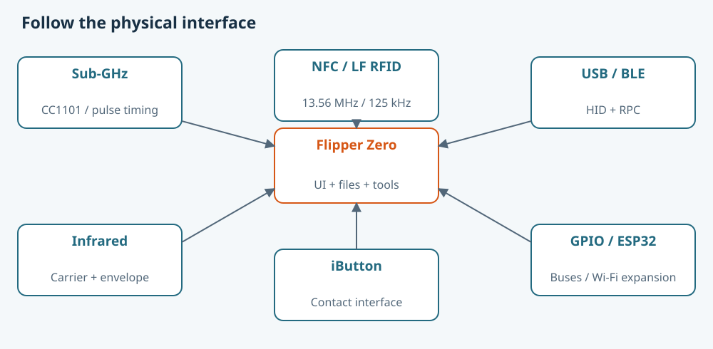
| Interface | What to investigate | Bench equipment |
|---|---|---|
| Sub-GHz | Pulse encoding, fixed code, stateful rolling code | Owned remote + disconnected test receiver / LED |
| NFC / M1 | UID, sectors, authentication and reader decisions | Classic test card + compatible blank + lab reader |
| LF RFID / iButton | Identifier-only designs and compatible media | Test tags / keys and a desktop reader |
| IR / USB | Command structure and implicit input trust | Your remote, TV and an offline test computer |
| GPIO / Wi-Fi expansion | UART logs, buses, board firmware and RF metadata | 3.3 V development board, meter, compatible ESP32 |
Firmware, customization and recovery
A firmware image, SD resources and an external app are separate artifacts. Record the firmware version and source commit before comparing experiments. Back up the SD card and use a USB data cable. Establish a working official release baseline before trying a community build.
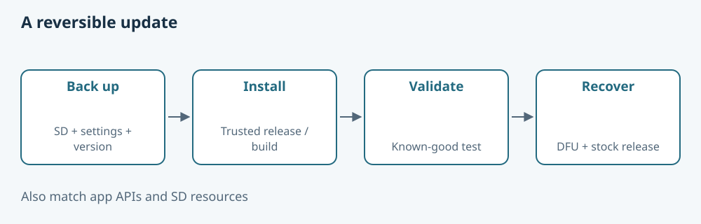
- Back up card data, saved remotes and app settings with qFlipper / a card reader. Note the current version.
- With a microSD card inserted, connect qFlipper or the official mobile app, choose the Release channel and complete the update without disconnecting power.
- Reopen a saved test file and run one known-good app. For a custom package, follow that project’s release instructions and verify its origin and available checksums.
- For corruption, enter Settings / Power / Reboot / Firmware Upgrade on a responsive device and use qFlipper Repair. If unresponsive, follow the official recovery button sequence linked below. Restore the official release before restoring compatible backups.
Build a small, reviewable firmware change
git clone --recursive https://github.com/flipperdevices/flipperzero-firmware.git
cd flipperzero-firmware
git rev-parse HEAD # record the exact source revision
./fbt # builds distribution artifacts
# Make a small change, inspect git diff, then rebuild
./fbt COMPACT=1 DEBUG=0 updater_package copro_dist
# Optional, only with your device connected and backed up
# ./fbt flash_usb_full| Choice | Role | Before installing |
|---|---|---|
| Official Release | Baseline for documented menus and SDK behavior | Version, SD assets, release notes |
| Momentum | Community customization, UI and bundled apps | Project release guide, app bundle and configuration changes |
| Unleashed | Community firmware with protocol and application extensions | Hardware target, firmware-specific features and regional TX rules |
| Your source build | Inspect one decoder, setting or UI component at a time | Pinned commit, diff, build log and a stock recovery package |
Keep RF transmission within local spectrum rules even when firmware exposes additional settings. Installing a different firmware cannot add a missing radio chip or solve an unsupported cryptographic protocol by itself.
Sub-GHz capture and signal analysis
The CC1101 receives selected bands, not a continuous 0–1 GHz spectrum. Official operational bands are 300–348, 387–464 and 779–928 MHz; transmission is region-limited. Match frequency, modulation and receive bandwidth before interpreting a capture.
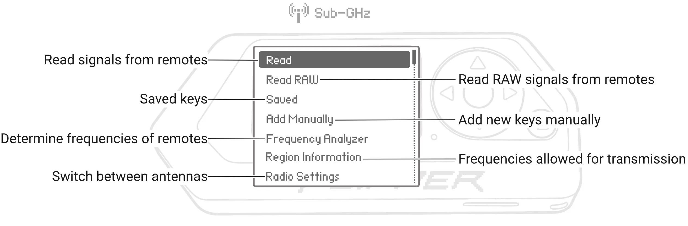
| Setting / mode | Meaning | Typical mistake |
|---|---|---|
| Frequency Analyzer | Find a strong nearby carrier; identify its protocol separately | A frequency peak alone does not reveal the code |
| Read | Run supported decoders and show structured fields | Assume every decoded dynamic protocol can be saved |
| Read RAW | Record demodulated level durations for timing analysis | Treat pulse timings as SDR I/Q samples |
| RSSI threshold | Gate weak activity; choose it from the idle and target levels | Raise it so far that the frame edges disappear |
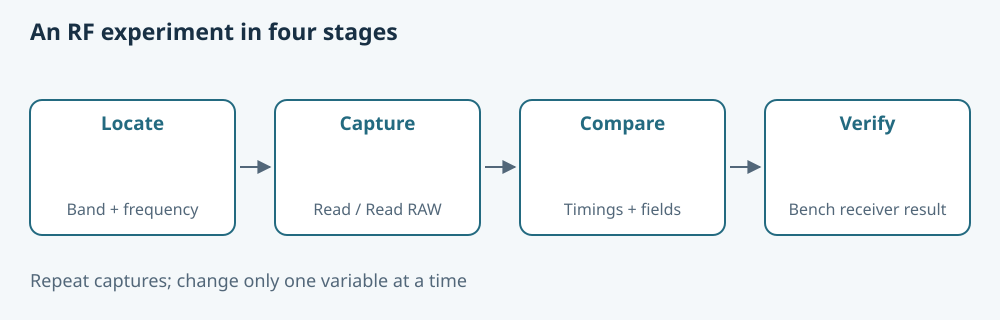
A repeatable RF bench session
- Place your remote near Flipper without pressing it against the antenna. Run Frequency Analyzer, press one button briefly, and note the detected band.
- Open Read, configure the measured frequency and a suitable preset, and capture several presses. Save a supported static protocol with a descriptive test name.
- For unknown timing, open Read RAW, start recording, make three separated presses and stop. Keep an idle sample. Compare RSSI, modulation and distance if it is noisy.
- Export the .sub file through qFlipper. Compare at least two captures and annotate frequency, preset, frame gaps and pulse ratios. Test replay only on your isolated fixed-code receiver.
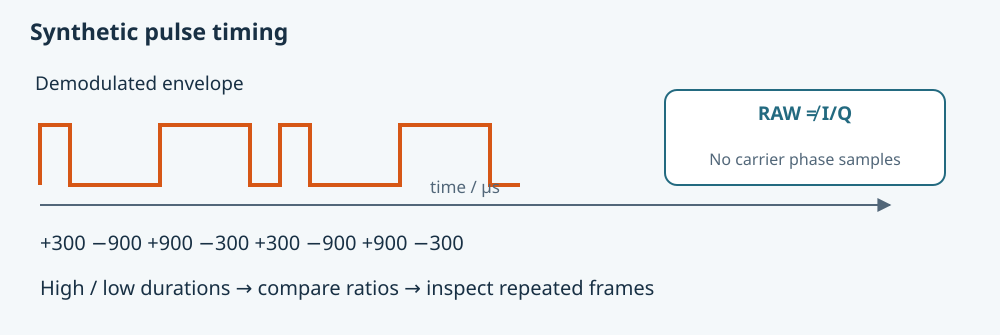
In a RAW .sub record, positive durations represent high level and negative durations low level, in microseconds. A long low gap is a candidate frame boundary. Cluster short and long timings, normalize drift, then inspect repeated frames. A histogram alone cannot identify encryption or establish a bit mapping.
Download the offline pulse inspector Synthetic .sub example
python3 pulse_inspect.py synthetic.sub --svg pulses.svg
# For a real capture, adjust the frame-gap threshold to that protocol
python3 pulse_inspect.py your_capture.sub --gap-us 5000 --svg capture.svgNice remote-control experiments
Check the exact remote and receiver model before transmitting. The official compatibility table identifies Nice FLO 12/24-bit as static at 433.92 MHz AM, and FLOR-S as dynamic at 433.92 MHz AM. Model labels and the decoded protocol matter more than a similar-looking case.
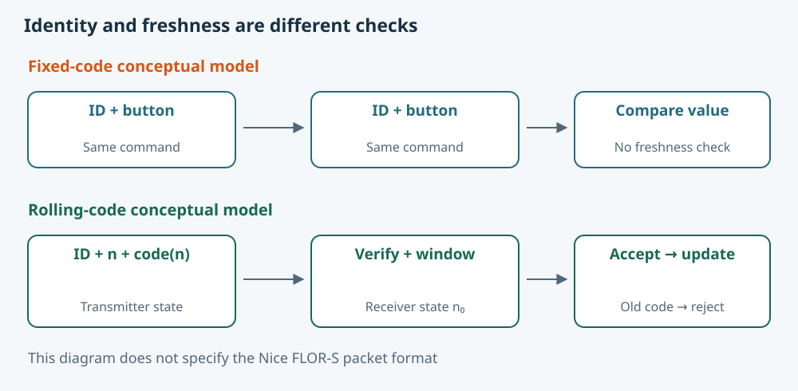
FLO fixed-code lab
- Use a spare FLO remote and matching bench receiver. Disconnect the receiver from the door or gate motor and observe an LED or relay indicator.
- Use Sub-GHz / Read at the confirmed frequency. Capture the same button several times, confirm the displayed static protocol, and save it.
- Open Saved, choose the test capture, select Emulate and send once. Compare the receiver indication with the original remote, then check another button.
- Log successes / trials, distance and preset. If it fails, investigate protocol variant, bit length, modulation and receiver pairing independently.
FLOR-S and enrollment
A rolling-code design maintains transmitter and receiver state. A previously accepted message may be rejected as stale; consuming codes away from the receiver can also affect synchronization. Official firmware decodes listed dynamic protocols with saving disabled. Use the receiver manufacturer’s authorized enrollment procedure for a new transmitter. Flipper’s Add Manually path is useful only where the current firmware explicitly supports that protocol and the receiver supports enrollment.
M1 / MIFARE Classic cards
“M1” commonly refers to MIFARE Classic. Identify the card family before choosing a workflow. Classic, DESFire, Ultralight and LF RFID have different memory and authentication models. Displaying a UID is only one observation; determine what the reader actually authenticates.

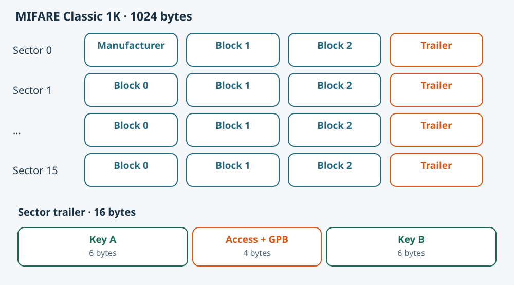
Each sector trailer contains a 6-byte Key A, access-control bytes and a 6-byte Key B field. The access bytes determine block permissions and how Key B is used. Trailer data needs careful handling: readable dump bytes do not necessarily expose the actual secret keys. Classic uses Crypto1; a UID-only reader introduces a separate system-design weakness.
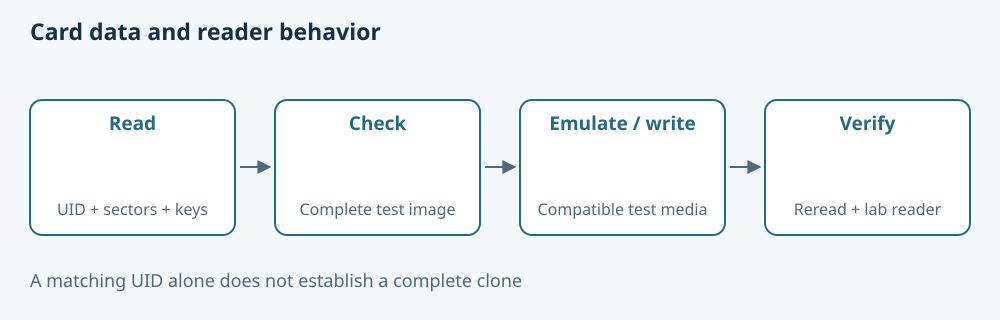
Clone a known-key test card
- Prepare a spare Classic card with known test keys and a lab reader. In NFC / Read, scan and save it. Record UID, type and sectors successfully read.
- Resolve missing sectors before writing. Test emulation against the lab reader and note whether it authenticates data or only checks the UID.
- Open Apps / NFC / NFC Magic and use Check Magic Tag on a compatible blank. Supported generations and capacities must match the current app’s documentation.
- Choose Write and the saved complete test image. Keep the blank in place, then reread it and compare UID and application data. Test the original, Flipper emulation and blank separately on the lab reader.
| Result | What it means | Next check |
|---|---|---|
| UID read | Selection and identification worked | Sector authentication and data coverage |
| Complete Classic dump | Required data and usable keys have been collected | Access bits, dynamic state and reader policy |
| Emulation works | The tested reader accepted that interaction | Physical blank behavior and timing may differ |
| Ordinary Classic blank | Data may be writable with the right keys | Manufacturer UID is not normally rewritable |
When a test dump is incomplete
The official key-recovery guide documents dictionary attempts, MFKey32 and card-only attacks. MFKey32 uses suitable reader authentication nonce transcripts to recover Crypto1 state. On an authorized lab reader, follow Extract MF Keys, compute the candidate keys with the documented tool, then reread the test card and verify coverage. Collecting nonces alone does not prove key recovery. Keep transcripts private and distinguish card-only prerequisites from reader-assisted ones.
LF RFID and contact keys
A card’s shape does not identify its radio technology. Start with the LF RFID and NFC read modes separately. A 125 kHz identifier badge and an authenticated 13.56 MHz card can look identical while relying on very different security assumptions.
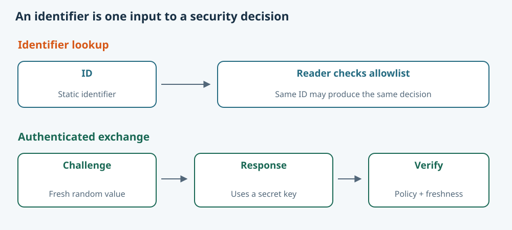
| Medium | Lab workflow | Boundary |
|---|---|---|
| 125 kHz RFID | Read a spare tag → save → emulate on your reader → write a compatible rewritable test tag → reread | T5577-class media need protocol / encoding compatibility; not every LF tag is writable |
| iButton | Read a test key through the contact pad → save → emulate → compare a compatible writable blank | Dallas, Cyfral and Metakom differ; a secure authenticator is not equivalent to a simple serial-number key |
A useful finding is a precise statement such as “this bench reader accepts the duplicated identifier without another challenge.” Avoid generalizing that result to every badge or every reader from the same vendor. Store protocol, ID, reader model and observed decisions in your notebook.
Infrared remote reverse engineering

IR separates a carrier from its command envelope. A receiver demodulates the carrier into marks and spaces. A decoded protocol may expose address, command and repeat information; a RAW capture preserves the envelope timing. Devices with stateful remotes, especially air conditioners, may send an entire state rather than a simple button code.
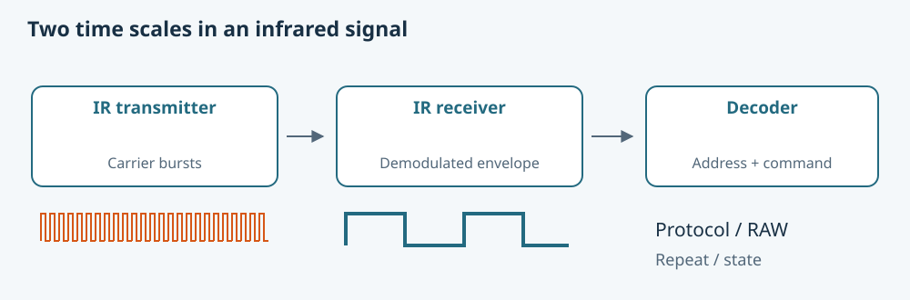
- Open Infrared / Learn New Remote, aim your remote at Flipper’s IR window, press one harmless button and save it with a meaningful name.
- Learn two other buttons and inspect the .ir file in qFlipper. Compare decoded address / command fields or RAW timing arrays.
- Replay once at the owned appliance and observe its state. For a toggle command, log the starting state; for AC controls, compare complete state changes.
Use a single-device learning exercise before testing universal dictionaries. A failed send can be caused by aim, distance, a missing repeat frame or the wrong state, even when the pulse capture looks clean.
BadUSB and BLE HID experiments
USB HID is a trust-boundary experiment: a computer accepts input from a peripheral as if a person typed it. Flipper can send scripted keyboard input over supported USB / BLE HID paths. Focus on visible actions in a test editor to understand enumeration, focus, layout and timing.
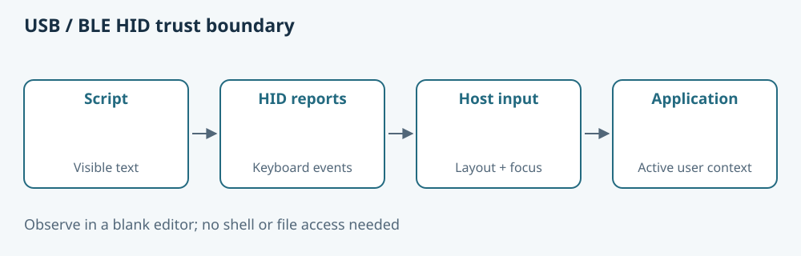
REM Open an empty text editor on your own computer first
DELAY 1500
STRING Flipper lab - visible keyboard input only
ENTER
STRING Verify keyboard layout, focus and timingSave this as visible-hid.txt under SD Card / badusb. Open a blank editor yourself, connect Flipper, select the script in Bad USB and run it. This example opens no shell and reads no files. Compare US and non-US layouts and log missed characters. For BLE, pair only with your test host and remove the pairing afterward.
Download the visible HID example
For a security assessment, measure whether unknown HID devices are allowed, whether an unlocked session is required and whether device-control policies are enforced. VID/PID strings identify a device claim; they are not cryptographic proof of its identity.
GPIO, UART and Wi-Fi expansion
A good hardware-hacking workflow starts with a meter and the board documentation. Identify ground, logic voltage and bus direction before connecting wires. Use 3.3 V logic for the labs below; a 5 V power pin is a separate supply rail. Never assume a pin is safe at 5 V in every configuration.
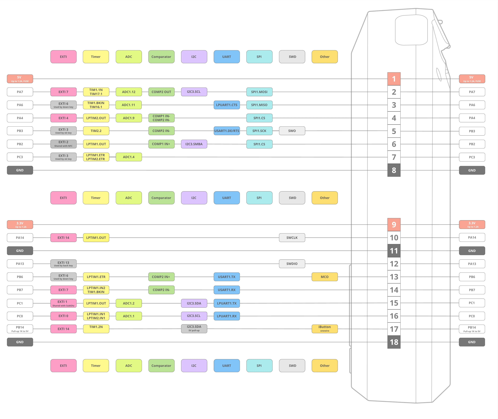
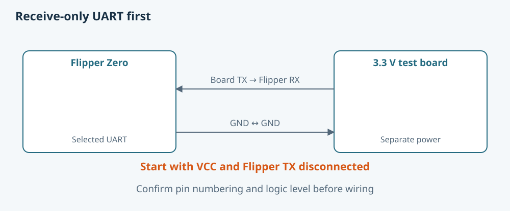
- Use a documented 3.3 V development board. Power it separately. Connect its GND to Flipper GND and its TX to the selected Flipper RX. Leave Flipper TX disconnected initially.
- Open GPIO / USB-UART Bridge, match the UART configuration, and select the Flipper serial port in your terminal. Compare the board’s documented baud rate and framing.
- Capture boot messages and timestamps without sending commands. Later, connect the opposite direction only for a defined test. Keep firmware consoles and logs private if they contain secrets.
| Bus / extension | Investigation | Required detail |
|---|---|---|
| SPI / I²C | Read a test sensor or inspect a known bus transaction | Correct bus app, pull-ups, chip-select and voltage; never drive an active bus blindly |
| SWD / debugging | Breakpoints and firmware tracing on an owned dev board | A supported debug probe; UART bridge alone is not an SWD probe |
| ESP32 + Marauder | RF discovery / metadata on an isolated Wi-Fi lab network | Separate board firmware, matching hardware target and a compatible Flipper UART app |
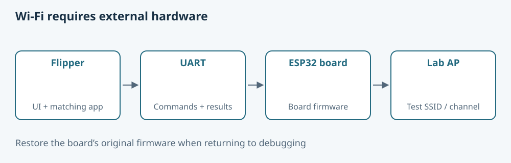
For a Wi-Fi lab, use an isolated AP with a test SSID. Match the expansion board’s exact model to Marauder’s supported-hardware table before flashing. Compare channel and beacon metadata with the AP configuration. Record which actions are passive scans and which emit frames. Save the original board firmware so you can restore its debugging role.
Build experiments that teach something
| Experiment | Hypothesis and method | Evidence to keep |
|---|---|---|
| Fixed-code replay | The test receiver accepts an identical command. Compare original vs emulation at the same distance. | Preset, decoded type, trials and receiver LED log |
| Stateful rejection | A previously accepted message is rejected by a stateful test receiver. Use a toy receiver or documented dev kit. | Counter transitions and acceptance log, no real receiver secrets |
| Card reader policy | Does the lab reader need authenticated sector data, or only an identifier? Compare explicit reader configurations. | Reader configuration, successful sector coverage and decisions |
| Hardware observability | Boot logs expose a protocol or configuration error. Capture the same reset sequence several times. | Wiring diagram, voltage, baud rate and timestamped logs |
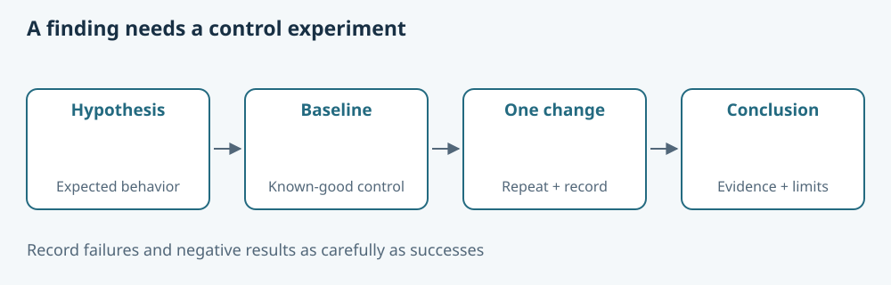
Download the bilingual experiment template
Troubleshooting by layer
- No RF capture — check the supported band, battery, modulation, bandwidth and antenna distance before changing decoders.
- A capture exists but the receiver ignores it — check static / rolling classification, pairing, repeat timing and receiver state.
- A card UID reads but a dump is incomplete — investigate sector keys and permissions; a different firmware does not guarantee data recovery.
- UART text is garbled — check ground, logic levels, baud rate and framing. An output-voltage conflict is an electrical problem.
- An app will not load — compare its hardware target and required API with your firmware, then rebuild against the correct SDK.
Supporting apps and a tiny game
Use a small FAP app for a custom visualizer, input tool or game. Build the full firmware only when changing firmware internals. The included “Bit Lab” game lets you match an 8-bit pattern with the D-pad; it demonstrates input events, a message queue, locked state and Canvas rendering without accessing radios or cards.
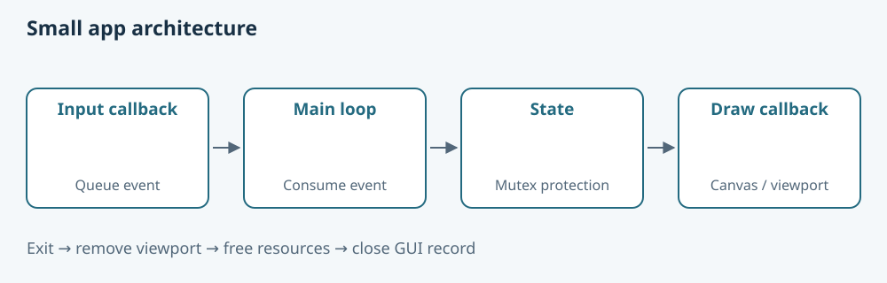
python3 -m venv .venv
. .venv/bin/activate
python -m pip install --upgrade ufbt
# Extract bit-lab-source.zip and enter the bit_lab folder
cd bit_lab
ufbt # builds the .fap in dist/
# Optional, with a Flipper connected over USB
# ufbt launchDownload Bit Lab source Compiled FAP · Read the C source · application.fam
The manifest declares appid, entry point and EXTERNAL app type. The SDK supplies the API and toolchain. Record the SDK version used for your build; a community firmware may require its own compatible SDK. A successful build verifies compilation, while input, display and resource cleanup still need a device test.
Official sources and community routes
Read protocol and electrical facts in official documentation, then inspect community implementations and issues. The table below is a curated navigation guide, not a bulk mirror of someone else’s repository. Versions and app availability change; check the project’s current release and hardware target.
| Resource | Best use | How to study it |
|---|---|---|
| Official docs | Menus, compatibility, recovery and electrical limits | Start with the chapter source links, compare the installed version |
| Firmware source | Decode state machines, file formats and peripheral services | Trace capture → decoder → saved file → transmitter |
| Flipper Lab | Find external tools and inspect their source links | Compare API compatibility and permissions before installing |
| UberGuidoZ | Community notes, IR resources and hardware references | Choose a small sample and inspect it; do not import opaque payload bundles |
| Derek Jamison | Walkthroughs, videos, app and game patterns | Follow the tutorial repository to its current video and source |
| Momentum / Unleashed | Compare community features and implementations | Read release notes and diff one feature against stock firmware |
| ESP32 Marauder | External Wi-Fi tooling and board compatibility | Begin with supported hardware and Flipper UART integration |
| Flipper forum | Protocol-specific discussion and reproduction reports | Search exact model + firmware + symptoms; verify claims against code |
Further hardware-hacking directions
- Wireless sensors and weather stations — study packet framing and checksum behavior on your own transmitter; support may live in a separate community app.
- Protocol implementation review — compare a decoder’s state transitions with captured edge timings, then add a regression test using synthetic input.
- Hardware test automation — turn a known UART / I²C experiment into a reproducible script and save wiring and supply assumptions with it.
- Radio beyond Flipper — use an SDR for I/Q and spectrum work, a logic analyzer for digital buses, and a specialized NFC instrument when raw protocol tracing is needed.